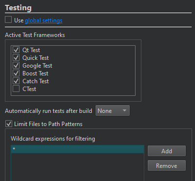

Apply filters before scanning for tests
To override testing preferences for the current project:
- Go to Projects > Project Settings > Testing.

- Clear Use global settings to select the tests to handle for the project.
- To automatically run all or selected tests after successfully building the current project, select All or Selected in Automatically run tests after build.
- To apply path filters before scanning for tests, select Limit Files to Path Patterns.
- Select Add to add the filters as wildcard expressions.
To remove the selected filter, select Remove.
See also How To: Test, Test Results, and Testing.